Overview
Design team
1 UI/UX designer (me!)
1 game designer
1 product manager
Art, narrative, engineering
Timeline
Feb-Apr 2023
Platform
Mobile, landscape (Harry Potter: Hogwarts Mystery mobile game)
What is Harry Potter: Hogwarts Mystery?
Harry Potter: Hogwarts Mystery (“HPHM” or “Hogwarts Mystery” for short), is the first game in which players can create their own character and experience life as a Hogwarts student.
What was my value add?
- At Jam City, I was a UI/UX design intern on the team for the game HPHM! I interned during a critical time for the team--the existing game narrative ended once the player graduated Hogwarts, but the team was now working on game expansion content (what happens post-Hogwarts)
- I was entrusted with designing the critical feature of enabling Hogwarts students that have graduated, to be able to work towards a career!
- While there was a littleee bit of pressure to do the feature justice for the players, I had so much fun with the design + alot of fun with my team during the internship 🙂
Identifying the user, product, and design problem
HPHM players are not shy about their opinions and thoughts about the game (there’s a whole reddit community about it!). We want to give the people what they want, so they stay engaged in the game!
When the product and design teams were brainstorming and researching what to include in the game expansion, it was found that:
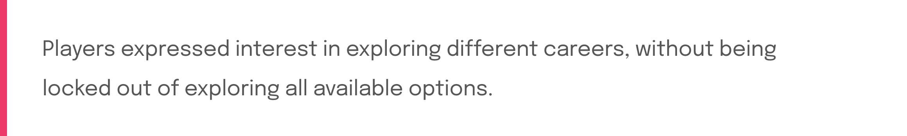This can be framed from the product perspective, as a user needs/want statement:
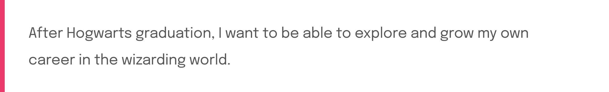The design problem statement is framed as follows:
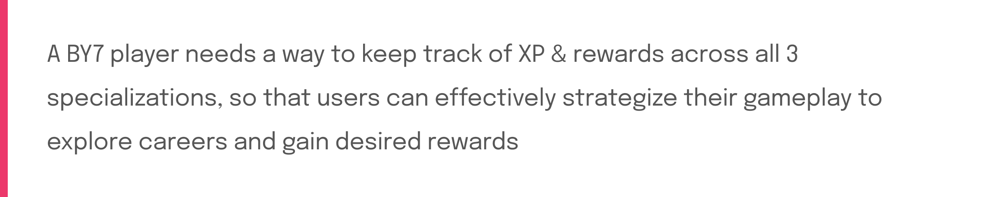Gathering UI/UX design requirements
Working in a cross-functional team, I was grateful to have the specifications of how product and game design wanted the feature to work.
A summary of the UI/UX key requirements from game design & product on feature logic, details, and reward systems are as follows:
Requirement #1: 3 career tracks, each track with a progression track for cumulative XP for which players can earn XP and rewards for different tracks simultaneously
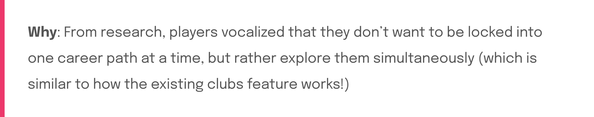Requirement #2: Clear visual distinction from the existing clubs feature, despite the feature’s similar logic and structure
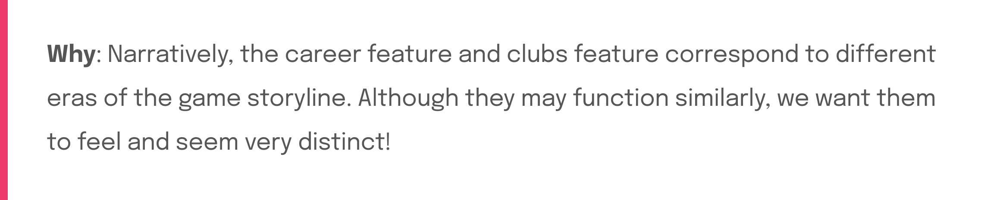Requirement #3: Rewards system logic to include ~10 level milestones upon launch. Rewards include consumables, customizables, repeatable projects
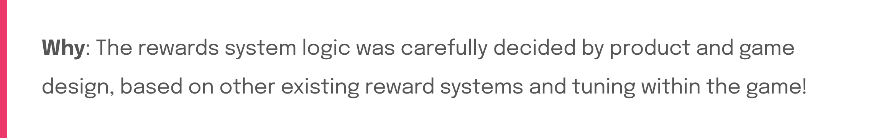The design requirements helped narrow down the scope of my work greatly, shaping the solution while still giving me complete ownership and enough freedom to explore throughout the design process.
User & market research
User and market research was conducted, to help define design goals and UI/UX principles for the career specialization feature.
User feedback on the existing clubs feature
Since the career feature would have a similar logic system and structure as the existing clubs feature, I looked into how the existing clubs UI worked, what went well, and how it can be improved.
Player feedback from game forums was gathered. Usability tests were also conducted through calls with multiple players.

Market research
Although the existing clubs feature served as a baseline for my understanding of how the feature logic could look, I also wondered:
Is this existing clubs UI design a common design pattern? What is the industry standard for XP progression and rewards? What are typical design patterns for XP progressions?
To answer these thoughts, I was suggested to look into battle passes, which are a common XP reward system in games. Common UI/UX patterns within battle passes, along with likes/dislikes regarding the UI/UX, were observe and tracked. Examples of different battle passes I looked at are shown below.

Shaping design goals, based on design research & requirements
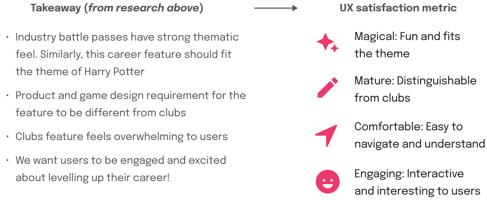 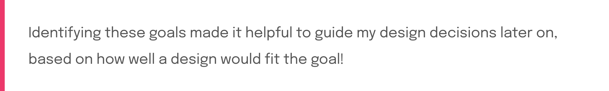Breaking down the core solution based on requirements
To visualize how users will interact with the new feature within the game, and also to ensure the design aligns with product and design goals, the design solution was broken down and outlined into smaller design problems to solve.
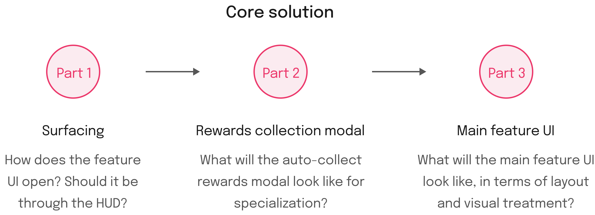Main feature UI lo-fis ⭐️
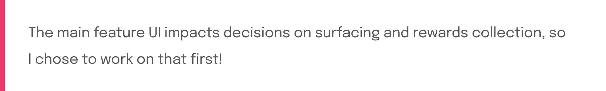Ideation based on design research, guided by the created user flow
The clubs feedback, and market research, were used as a starting point for ideation. I knew these would be good places for a starting point, because:
- Clubs has a similar logic system, and has feedback on how to improve
- Market research provided creative inspiration to be able to incorporate into the career/clubs rewards logic
After creating many different explorations for the feature UI, I picked the concept to iterate on by assessing them on the basis of:
- Effort
- Design goals
 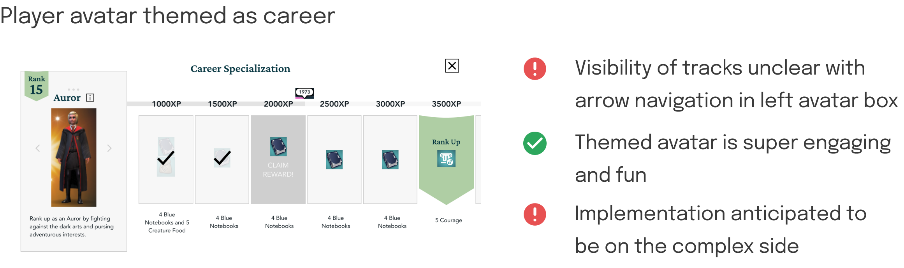
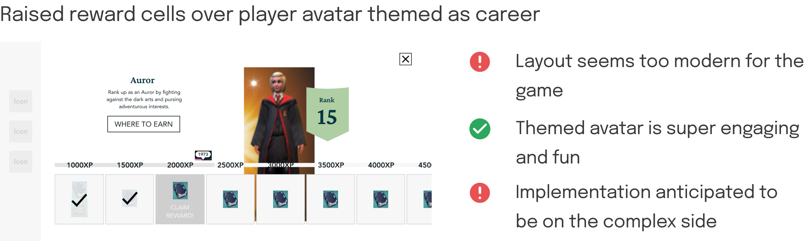
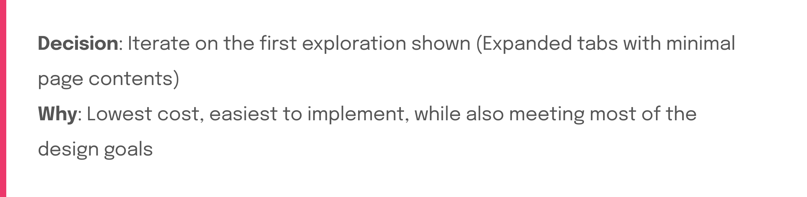
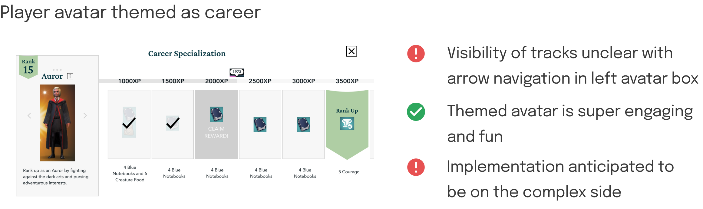
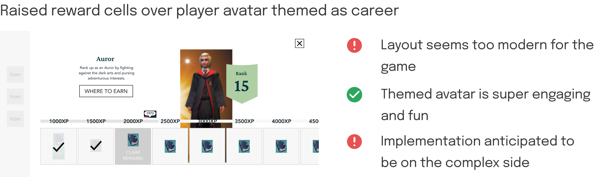
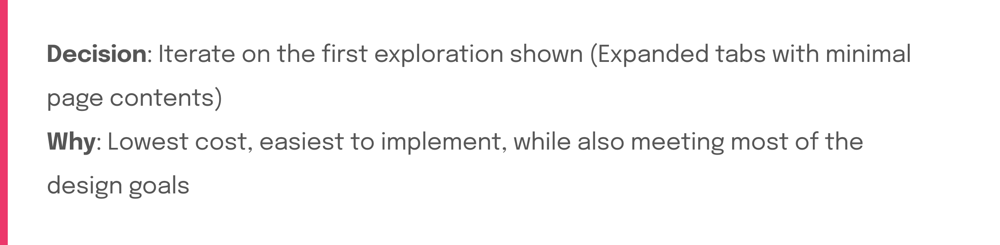
Iterating on the selected concept
As shown in the assessment above, a design concern was that the design lacked magic and fun to the page. However, after receiving design feedback from mentors, I was reassured that polishing the lo-fis and turning them into hi-fis, will add more magic to the screen.
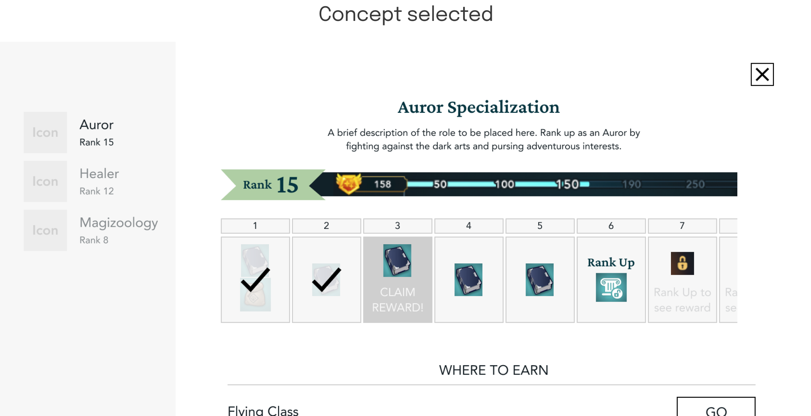 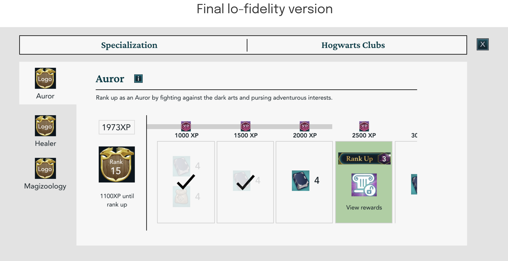 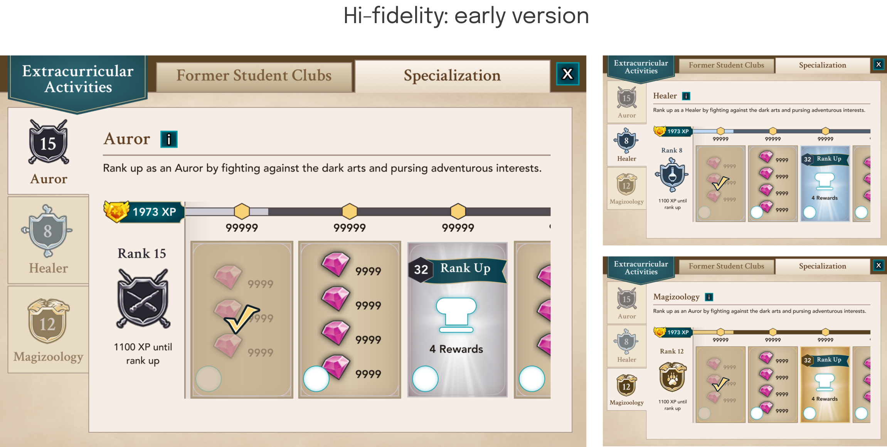After sharing this current state of the designs to stakeholders, I received feedback that the 3 different careers didn’t feel different, and special enough, from each other.
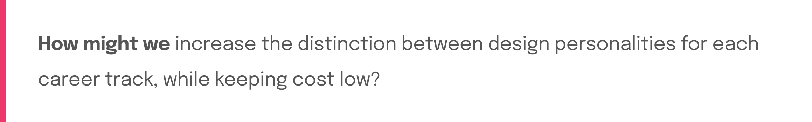I explored different ways to address this, with 2 ideas I had shown below! (NOTE: Implementation of concept in screens were only QUICK, ROUGH demonstrations for stakeholders!)
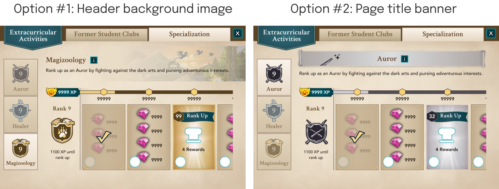 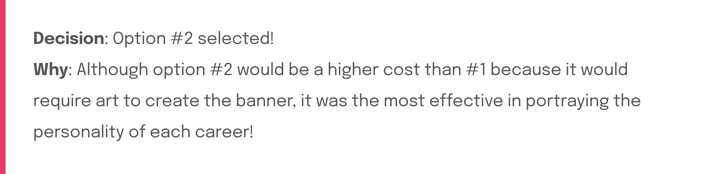 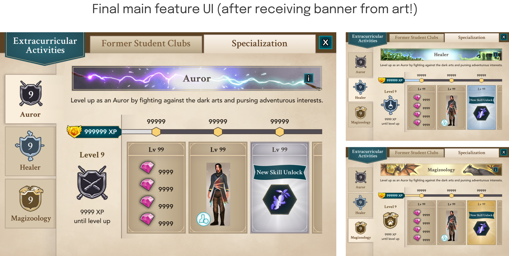Feature surfacing UX ⭐️
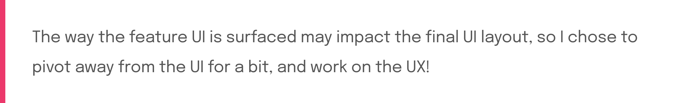Exploring and evaluating surfacing options, that fit into the game ecosystem
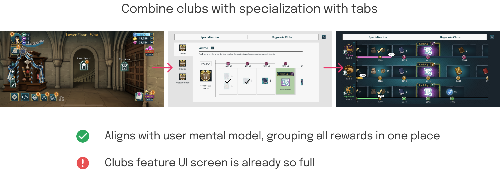 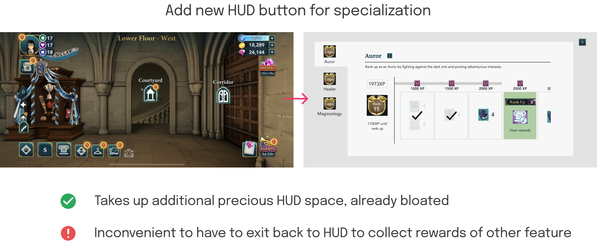 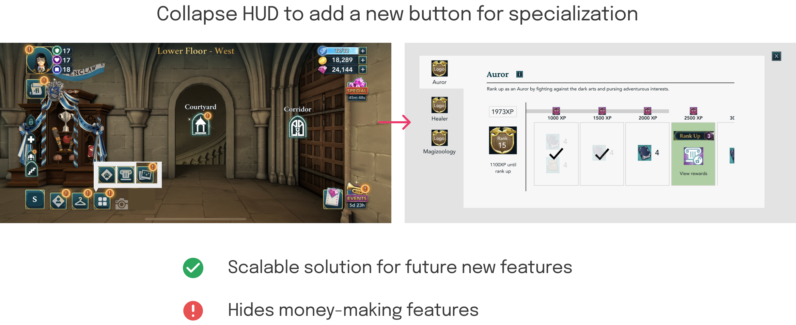 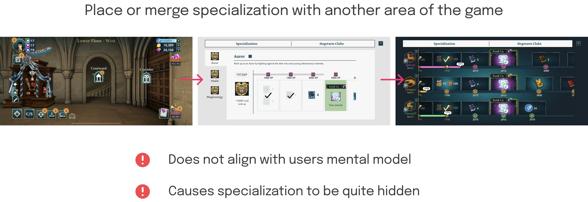 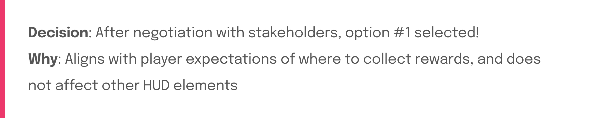Final design ⭐️
Results
The feature is currently getting ready to release on Sept 28! Upon launch, it will be released to 50M+ existing HPHM players, for them to play along with the post-hogwarts era.
Stay tuned for the update and findings of the feature performance and impact after launch!
Learnings
- Dabbling in UI art was something I had to do, that was new for me! The feature required more complex visual design and textures which I had to learn how to create.
- Changing my thinking to consider product and game design perspective as I designed, was a big learning!
- Designing for many states--there were SO many different reward cell states to design for! Staying organized and accounting for all the states was crucial to the success of the project.